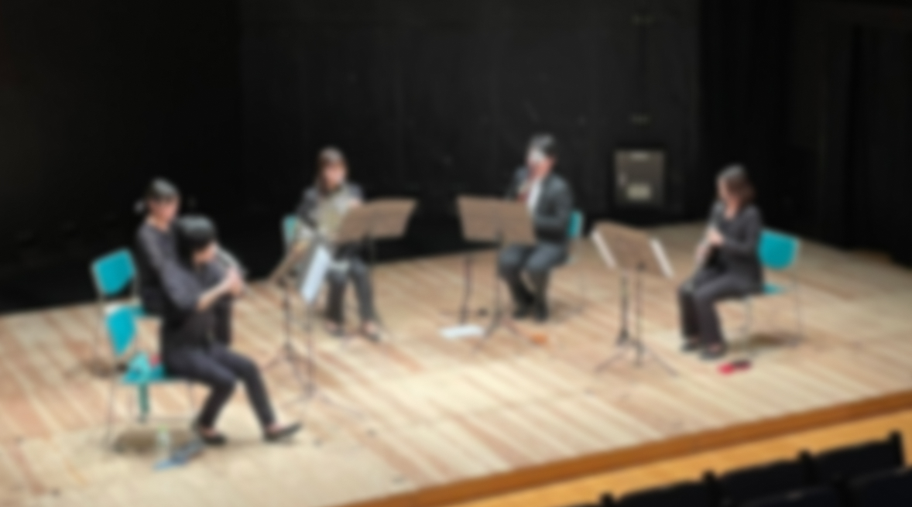

1st Concert(アーカイブ)
close
演奏会概要
| 日時 |
17:00開演(16:30開場) |
|---|---|
| 会場 | ぽんプラザホール |
入場無料 / 全席自由 ※要予約
メンバー紹介
曲紹介
クルークハルト 木管五重奏曲
Klughardt Wind Quintet Op.79
クルークハルトが51歳の時に手掛けたこの曲は、牧歌的なメロディと細かい動きの対比が印象的で、親しみやすい曲調です。
4楽章構成なので、各楽章の特徴的な色合いも魅力の1つです。
エワルド 金管五重奏曲 第1番
Ewald Brass Quintet No.1
エワルドはアレンスキーやグラズノフと同世代であり、金管五重奏曲第一番は1912年の作品です。
別名"金管楽器のための交響曲"とも呼ばれています。効果的な楽器法とロシア的でロマン派風の叙情的な旋律美となっており、大変魅力的な作品です。
他、数曲